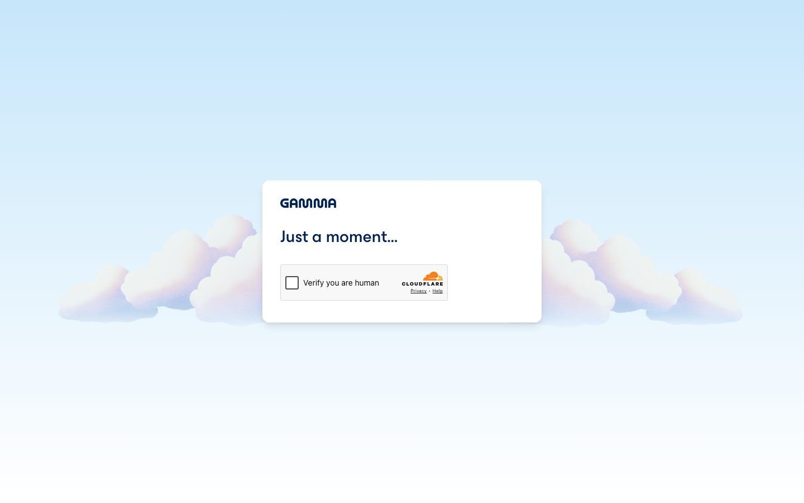
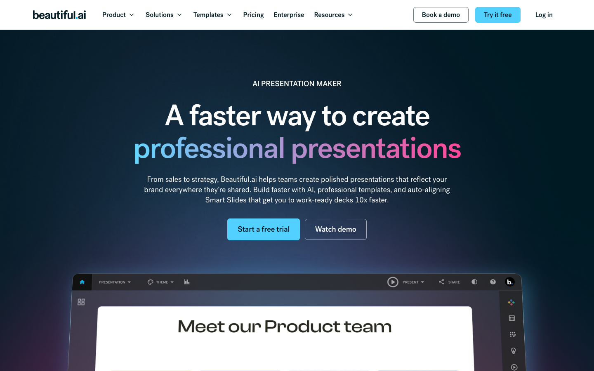
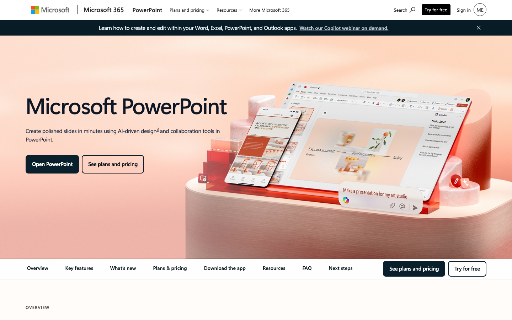

AI PRESENTATION / 比較ガイド
AIプレゼン作成サービス比較｜Gamma・Beautiful.ai・Canva・Microsoft 365 Copilot【2026年】
AIスライドは、たたき台の速さ、レイアウトの安定、ブランド運用、既存Office資産との接続で選ぶべきサービスが変わります。公式料金・AIクレジットと国内外レビューを一つの判断表にまとめました。
- たたき台の速さ：Gamma。Freeは最大10枚/プロンプト、Plusは年払い月9ドル・1,000 credits。最初の案を作るまでが速い一方、creditsを使う機能は上限がある。
- 営業資料の整列：Beautiful.ai。Proは年払い月12ドルでAIコンテンツ・スライド無制限。自由なレイアウトを細かく設計したい人には不向き。
- ブランドとSNS：Canva。Proは年額144ドル表示で月12ドル換算。AI allowanceはStandard最大2,000回の目安で、資料以外の制作も一つにできます。
- Office資産：Microsoft 365 Copilot。Business Standard with Copilotは月23.50ドル/ユーザー（年払い）でPowerPoint・Word・Excel・Teams・1TBを含みます。
料金・credits・コスパ比較（2026年8月2日時点）
価格は公式の米ドル表示です。AIスライドは、生成枚数・credits・編集者数・既存ソフトの有無を同じ表で見ないと総額を誤ります。毎月20枚の営業資料を作るチームを想定し、単位あたりの読みやすさも記載します。
比較シナリオ：営業担当2人が月20枚の提案資料を作り、マーケ担当が月10本のSNS用スライドも作る想定です。資料だけでなく、ブランド資産と共同編集の有無まで含めると第一候補が変わります。
| サービス（公式） | 代表プラン・月額 | 含まれるusage | 実効コスト | コスパの結論 |
|---|---|---|---|---|
| Gamma | Free $0、Plus $9/月（年払い） | Free 400 credits一回・最大10枚/プロンプト、Plus 1,000 credits/月 | Plusは約$0.009/credit。1デッキの消費量は画像モデルで変動 | 試作から定例資料へ移る入口が安い。高頻度生成はcredits管理が必要 |
| Beautiful.ai | Pro $12/月（年払い）、Team $40/人/月（年払い） | AIコンテンツとスライド無制限、Smart Slides、Proは編集者1人 | Proは月$12で枚数による追加課金なし | 定型資料の更新量が多いほど単価を読みやすい |
| Canva | Pro $144/年（$12/月換算）、Business $250/年/人 | ProはStandard最大2,000回、Premium最大200回、Ultra最大20回の月次目安 | Proは月$12換算。画像・動画・資料でAI allowanceを共有 | プレゼン以外の制作も同じアカウントで回すなら有利 |
| Microsoft 365 Copilot | Business Standard with Copilot $23.50/人/月（年払い） | PowerPoint・Word・Excel・Teams・1TBストレージを含む | 既存M365がなければ一式の月$23.50。Copilot単体の枚数単価は公開されていない | 既存Office資産を使う会社ほど追加ツールを減らせる |
Gammaのcredits、CanvaのAI allowance、Copilotの推論量は機能ごとに変動するため、同じ「1枚あたり」の数字へ無理に揃えません。作成枚数が多くレイアウトを固定したいならBeautiful.ai、資料以外も作るならCanvaというように、利用量の単位と業務の幅を合わせます。
4サービスの実力と口コミ

Gamma：数分で構成案を作る
G2とCapterraの利用者は、テーマを入力してデッキ・ドキュメント・Webページまで連続して作れる速度を評価します。Redditでは、AIの下書き後に内容を整える工程とcredits消費が論点になります。会議のたたき台や提案の章立てを先に作り、PowerPointへ出力して仕上げるチームに向きます。

Beautiful.ai：レイアウトを崩さず定型化
G2ではSmart Slidesの自動整列と、ブランドカラーを保ったまま資料を更新できる点が好評です。Capterraでも操作性が評価される一方、自由なレイアウトや細かな配置を重視する利用者には制約と感じられます。営業・研修・月次報告のように「同じ型を変えずに内容だけ更新する」業務でコスパが出ます。

Canva：ブランド資産を横断利用
G2の解説とTechRadarの報道では、テンプレート・ブランドキット・AI機能を一つの環境で使えることが強みです。RedditではSNSや一枚物は速いが、長いプレゼンはテンプレート感や編集量が気になるという傾向があります。営業資料だけでなく、広告画像・SNS・印刷物まで共有素材を展開する会社に向きます。

Microsoft 365 Copilot：既存データからPowerPointへ
Microsoft Supportが説明する通り、PowerPoint内で既存のWord文書やテンプレートを使い、スライドの追加・要約・編集まで進められます。既にMicrosoft 365を使う企業では、ファイル権限と保存先を変えずに導入できるのが強みです。一方、独自のビジュアル作りや大量の画像案出しは、GammaやCanvaの方が向いています。
強み・弱み比較表
| サービス | 強み | 弱み | 向く人 | 向かない人 |
|---|---|---|---|---|
| Gamma | たたき台、構成、共有リンク | credits消費、細部の手直し | 企画・提案の初稿担当 | 既存テンプレートを完全に守る人 |
| Beautiful.ai | 整列、定型化、共同編集 | 自由度、細かなレイアウト | 営業・研修・月次報告 | 自由なアートディレクション |
| Canva | ブランド、素材、SNS展開 | 長い資料のテンプレート感 | マーケ・デザインチーム | Office文書だけで完結したい人 |
| Microsoft 365 Copilot | Office連携、権限、既存データ | AI生成量の単価が見えにくい | M365中心の企業 | Officeを使わない少人数チーム |
用途別の決定ルール
Gamma
テーマから章立てと初稿を素早く作りたい場合の第一候補です。
Beautiful.ai
ブランドを保ったまま毎月の資料を更新する場合に強いです。
Canva
資料とSNS・広告を共有アセットで展開したい場合に向きます。
Copilot
Word・Excel・Teamsの内容をPowerPointへつなぐ場合に最短です。
資料の作成者が少なく、用途がプレゼンだけならGammaまたはBeautiful.ai、複数部署が画像やSNSまで触るならCanva、保存先と権限を変えたくないならCopilotを選ぶと、導入後の運用がぶれません。
自社の業務へ最短経路で組み込む
AIで資料を作るだけでは、素材の保管場所、営業CRM、会議メモ、公開後の更新が分断されます。AI顧問室は、どの資料を誰がどの頻度で作るかを整理し、選んだサービスを既存の営業・マーケティング業務へ組み込む設計まで支援します。
- Gamma料金 / G2 / Capterra
- Beautiful.ai料金 / G2 / Capterra
- Canva料金 / G2解説 / Reddit傾向
- Copilot料金 / Microsoft Support / PowerPoint利用者傾向
価格・利用量・レビューは2026年8月2日に取得しました。
よくある質問
無料で試すならどれですか？
Gamma Freeは最大10枚/プロンプトで試せます。Officeを既に使っている会社はCopilotの既存資産、SNSも作る会社はCanva Freeから触ると、導入後の利用イメージを持ちやすいです。
PowerPointへ出力できますか？
GammaはPPTX出力、Beautiful.aiはPowerPoint入出力、CopilotはPowerPoint内の生成、Canvaはプレゼンのダウンロードに対応します。既存のテンプレートを守るか、構成を作り直すかで候補が分かれます。
AI顧問室では何をしてくれますか？
資料の目的、作成頻度、既存ファイル、ブランドルールを整理し、選定から営業・マーケティング業務への組み込みまで支援します。